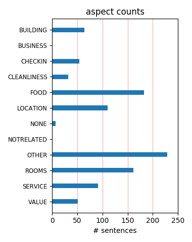
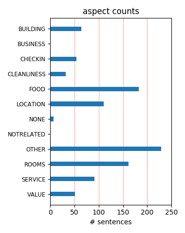

Napa is the place by nature but this hotel,the people that work a this location they are wonderful,stay there just 2 days . and i want to go back ,the memories of there me and my wife will stay forever.THank you for all love love . Geraldo and Daniele
This hotel in old but very clean my room was very small and I don't like the bed was not confortable the bathroom are big in compare to the room, the breakfast was OK and the service as well. Two years ago I stayed in the Villagio Inn that hotel is perfect.
My wife and I stayed at the Vintage Inn 8/31-9/2 and loved it. Perfect location with large comfortable rooms. They have a great breakfast in the morning and heated pool and jaccuzzi for later. Far from inexpensive, we did get a discount by using SniqueAway.com, which helped.
Had a great wine trip! Hotel was very convenient for walking to dinner. The breakfast was amazing. Would stay there again. We were weary about an outside room because of traffic noise, but not a problem, If you had a court yard room, the late night rowdy crowd, would have been worse!
One of the best hotels we've ever stayed in! Room was amazing with a gorgeous bathroom and huge tub. The wine in the room was so good we try and get it whenever we can. The breakfast was decadent. Our view was amazing. Perfect for a romantic getaway or honeymoon. Do not stay anywhere else!
We enjoyed our stay at the Vintage Inn. The staff were friendly and helpful. The room was very comfortable . It was very cold when we were there so the fireplace and tub were especially appreciated. They have a nice wine tasting and cheese hour in the afternoon. The breakfast was delicious.
My husband and I chose this for our honeymoon and remains one of our top places to stay. The wood beamed ceilings, fireplace, wine upon arrival, the pleasures never seemed to end. The Napa area is beautiful, but with the Vintage Inn, you may never want to leave your room. We just loved it!!!
This is a very romantic place. The room was beautiful. A bottle of wine is waiting in your room. There is a great whirl pool bath in the bathroom. The location is perfect. It's right next to world class restaurants. The service was great. We enjoyed a great breakfast buffet with an omelet bar.
Very quaint, boutique hotel in the heart of Yountville. Great location, walking distance to shopping and several wonderful restaraunts. Champagne breakfast in the mornings was very nice and very good. Rooms were clean with alot of character. Would highly recommend and will definitely stay here again.
Altho it was a bit noisy during the day with all the yardwork outside and people walking in and out above our room, this was a lovely place to get away to. Our dogs loved it and we enjoyed that it was within walking distance of Bouchon/Bakery and the shopping plaza. They also had a great Sunday brunch.
We stayed at the Vintage Inn for a special occasion and were hoping it'd be much more than it was. Overall it was a nice Inn - very clean, nice big room, bathroom & balcony, but we didn't feel it held up to the price charged. The room we stayed in was noisy, close to the highway. One nice surprise was the great breakfast.
My husband and I spent a weekend at The Vintange Inn. It was absolutely delightful. Cornelio, the concierge was fabulous. He planned a lovely day at several wineries. The bed was very comfortable. L'Octaine toiletries were in the bathroom. The evening hor d'eourvs were delicious and the breakfast was wonderful. We will return.
Rented room 312 (I believe), with fireplace, 20 foot ceilings, super comfy bed (those pillows!). Breakfast delicious. Spa included, but is about half mile away, and worth the drive/jog. in other words, don't pass this place up if you'll be in Yountville area. BTW, up the route is Mustard's, a not-to-be-missed lunch palace($$$).
My wife and I stayed here on our second trip to the wine country and the Vintage Inn is a fantastic hotel. The rooms are clean and comfortable, the grounds are wonderful and the lobby is a great gathering place. Wine & cheese in the evening and the breakfast is worth the stay. This will be out hotel of choice each time to visit.
Everything at this hotel was wonderful. The room was spacious, clean and beautifully appointment (esp. the bathroom with the L'Occitane products). The grounds are meticulous. The location is right in the heart of Yountville, which has the best restaurants and quaint shops. The breakfast buffet is bountiful....I'll definitely return!
My family of 17 stayed here for my 60th birthday. The rooms are spacious with an attractive country french decor. But the breakfast , tea, and wine tasting on the weekends made the trip fabulous. I've never seen such a beautiful bounty of food served at a bed and breakfast. A good value was had by all. Try to book a room away from the highway.
Vintage Inn is a favorite in Yountville and the Napa Valley. Wonderful beds and pillows and the grounds are immaculate. Fantastic location, close to world class dining, Bouchon, Bottega, Redd, Ad hoc, etc..... Their fresh omelette station and breakfast is a real treat and we looked forward to it each morning. Love the stay, didn't want to leave!
We have stayed at this hotel twice and it's sister property, the Villagio, three times. We love them both. Villagio is a little more modern. The Vintage Inn is smaller, quieter and well, more "vintage" and rustic. The afternoon tea is a nice touch and the breakfast at both properties is really great. We simply love Yountville. We will keep coming back.
We had a dreamy stay here even though it was only for 24 hours! Next time, we will stay for 2 nights minimum! The pool is deluxe with views, beautiful grounds with an Alhambra-esque waterway throughout the grounds, and the breakfast was delectable. We will definitely return in early 2010 for a more in depth visit! Thanks to all the staff at the Vintage Inn & The Villagio Spa.
Wow !!! This place is amazing ! The decor is French Country with lush flowering gardens and waterways throughout the immaculate property. Breakfast brunch, tea and wine tastings are served daily. The food and service are superb. Christiana was a very helpful concierge before and during our stay. We will certainly return to this paradise as they made our 35th anniversary a memorable one.
We stayed at the Vintage Inn in May for our honeymoon and my husband's birthday. The Vintage Inn made everything truly special and we will have wonderful memories of our time there. Service was impeccable and you can't get a better breakfast than the one they serve. Their food is wonderful. Our room was quiet and spacious. If we ever go back to California, we will absolutely stay there again.
Vintage Inn is in a perfect location to walk to all of Yountville's restaurants and shops. The buffet breakfast (included w/ room price) is one of the best we've had anywhere. Rooms are big and nicely furnished. However, they are extremely dark. Bathrooms are nice, double sinks. Tub/shower a little awkward to get in and out of. We enjoyed our stay but it just didn't have that wow factor for us.
The Inn is in a good location to get to most of the wineries easily. Vintage Inn was cheaper than another Inn we stayed at later in the week and just as good. Room was very clean and the large bathtub was nice. Breakfast was everything everybody has said except I wish they would have ice tea available. Ate at Hurly's, Mustards and Bottega. Bottega was alittle bit more expensive but all were very good.
A nice place to celebrate a anniversary or having a couple retreat. We stayed there in April and enjoyed it. Our room was located at ground floor next to the reception and pool. The rooms had 2 huge beds, Nespresso coffee maker, jacuzzi, private outside area. The breakfast area is in the reception with the option to sit outside by the pool. The had 2 chefs making omelette, and 1 that made Belgian waffles.
My friend and I stayed at the Vintage Inn last minute. We wanted to be close to our restaurant reservations. The stay at Vintage Inn was fabulous and friendly. They have two house cats on premises that have the run of the place; they are endearing. They also have an amazing breakfast in the morning, providing everything from fresh omlettes to mimosas and bloody Mary's. We love this place; well worth the cost!
Warm, cottage feel with wooden shutters, fireplace, jacuzzi tub and down featherbeds w/ duvets. Plenty of room, yet cozy, comfortable and unpretentious. Tasty European style brunch included. Choose a room in the center so you're not too close to the roads on either side of the property. Concierge is fabulous, with suggestions for vineyards outside of the mainstream. Connections to spa and restaurant are helpful too.
The hotel is located in a fantastic location in Napa, with a beautiful view of all winery properties and the wheater is just perfect. The rooms need some improvement like a better TV, a better place to connect and work with your computer, a much better internet connection and wardrobe with more internnal space. Also the transportation between the hotel and the SFO airport is terrible. The hotel service otherwise is just outstanding!
I was there for a small technical conference. It was a comfy, pleasant place to stay. It is probably not really designed for people there on business. It had very spotty wireless conductivity which made it hard to get work done. Again, if I was there to visit wineries, it was a very nice place but I was there on business so I was hoping that the conference coordinator had selected a location that would allow me to work easily at night.
We stayed at the Vintage Inn for 3 nights in July. First the positives -- great location; very friendly, professional staff; good breakfasts; refrigerator in room. The negatives -- very little storage for clothing (just an armoire), very high price for the quality of the room, the room was more like an upgraded Holiday Inn than a "nice" hotel room. If I were returning to the area I would look for a comparable, but lower priced property.
This is such a wonderful place. We are frequent travellers and have been in a lot of beautiful hotels before but this is one of our favourites. Beautiful grounds, lovely rooms, excellent location in the center of Yountville and close to the vineyards, delicious breakfast offering a wide range of pastries, fruits, bread, cereal, omelets made to order... Poolarea is beautiful with large pool, comfortable loungers, hot tub and fire pit. We hope to come back here.
My wife and I stayed at the Vintage Inn for her birthday in January 2012 and enjoyed our brief stay. The cook to order breakfast, Friday evening winde tasting and the quality of the service teams were first rate. The only criticism I would give is that the hard wood floors and relatively thin walls and floors make for a noisy stay at best. I would recommend this property however as I don't believe I have ever stayed in a completely sound proof room. Give it a shot.
Set within walking distance to the wonderful Yountville restaurants, this hotel was a gem. The rooms are huge and the bathroom had a double vanity. Everything was extremely clean and the staff was accommodating and helpful. The "buffet" breakfast is outstanding (and calling it "buffet" demeans it somewhat, as it's only a traditional buffet in style), as was afternoon tea and the wine tasting - all of which are included in the room prices. I would definitely stay here again.
Five hundred a night is a bit steep for a Motel 6 like experience. Paper thin walls and ceilings, staff that started vacuuming the outdoor sidewalks at 8:30 am, dingy rooms and you can every footstep on the ceiling above you. Nothing "charming" about this place. The previous summer we stayed at Bardesono for a hundred less and an out of this world experience (unfortunately it was booked). Yountville is a perfect setting, but the Vintage Inn is not! Felt hustled and would NEVER recommend this place.
We stayed in September during the "rush" or harvest season for wine country and were lucky to find such a great location with many amenities including a wonderful concierge. The day started out with a yummy morning brunch including mimosas, bloody marys, and fresh fruit, juices, breads, etc. The room was clean and the property grounds filled with lovely plantings, a waterway and many shady areas to rest. The pool was clean and the sister property (Villagio) spa and gym were included with the Vintage Inn.
I had heard nothing but great things about this property. I found it to be OK -- not great. It was difficult to find your way around the numerous small buildings. The bathtubs, it must be said, had high tiled sides, which make it difficult to step into -- and it was a combo bath/shower. The breakfast was delicious, but crowded. There was a small pool that we enjoyed sitting by. It is convenient to wineries, etc., but either go for a truly authentic experience or stay try a larger place with more amenities.
We stayed at the Vintage Inn for 3 days during our California roadtrip for our honeymoon. It was excellent. Great champagne breakfast, amazing afternoon tea, lovely pool, super staff, an awesome spa (at villagio - as a guy I've never seen anything like it) and lovely rooms. The only negative which is similar for several yountville properties is it's proximity and therefore noise from the main road. It is handy for wine tours and what a selection of restaurants from super posh to more relaxed with BYO! Highly recommended.
We stayed here but used the amenities at their sister property, the Villagio because their grounds are more established and because I prefer the decor. We thoroughly enjoyed our stay here. They were excellent hosts. Between the two properties Villagio stands apart because the grounds are more established and overall it is more lavish. Their breakfast is excellent as was their wine tasting. A great deal when you consider the appetizers, breakfast and fantastic poolside service. Thank you for making my girlfriends 50th birthday a memorable one.
My daughter ance.d I were celebrating out birthdays and stayed at the Vintage Inn and used the services of the Villagio Spa. The rooms were amazing and very well decorated. All amenities were provided including a bottle of wine and espresso coffee maker. It also included a breakfast in the mornings. The Villagio Spa was amazing as well. We got their "Girl Friend" spa package and it more than we expected. The people were all very professional and and really nice. At the end, we were taken to a balcony and served appetizers and champagne. Couldn't have asked for anything more.
My husband and I stayed at the Vintage Inn while he attended a legal conference. The grounds were lovely, and the Inn is located conventionally right on the main street across from all the fabulous restaurants including the French Laundry. They served an amazing free breakfast every morning in the lobby (waffles and omelets made to order), held wine tastings, and etc. Our upper floor room was very nice, with a huge bathroom, outdoor deck overlooking the garden, fireplace and complimentary bottle of wine. Everyone was nice and helpful. We would stay there again if in the area.
This was our first trip to Napa and this hotel was a great find. We had an upstairs suite, which was very comfortable and spacious. The grounds are very nice and it looks as though there's a heated pool. We used the local fitness center, which is fine not great, and the spa at the Villagio which was awesome. It's nice to have access to a fitness center. We did the breakfast which was wonderful but missed the tea. Lots of nice touches and the front desk staff was very helpful with special requests, including shipping home wine. Great jacuzzi tub and the bed was very comfortable.
My boyfriend and i stayed here for 4 nights this weekend as my birthday celebration. We loved the coziness of the room, with a fireplace that sealed the deal. The weekend breakfast was incredible as well as afternoon tea, lemonade, apples, etc. Definitely money well spent. The only con i believe is house keeping; although they came twice daily to make your bed and replenish your towels... i thought it was odd, the only necessary items (cotton swabs, q-tips and soap) were never replenished, which im sure the front desk would have made right, had we asked. definitely two thumbs up!
Well, we must be creatures of habit -- an understatement perhaps. But we keep coming back because it's comfortable, great rooms, great location, excellent proximity to the Napa area, walkable to about a dozen excellent restaurants right on Washington (including the renowned French Laundry) --- lovely pool, unbelievable ******** breakfast every morning with more than you can possibly imagine including cook to order omeletes, and an array of breakfast food that will carry you for the day while you wine taste in the glorious Napa Valley.... HIGHLY recommended for 17 years as regulars.
We loved the Vintage Inn! The rooms are beautiful, huge, very nicely decorated and have a huge balcony and fireplace. We stayed in an upstairs room in one of the "round" buildings and it was amazing. The balcony is the perfect place to enjoy a drink at the end of the day. The grounds are beautifully landscaped. The hotel is a short walk from any of Yountville's amazing restaurants. The concierge was fantastic! The breakfast was absolutely the best I have had at any restaurant (i.e., it was every bit as good the Princeville Hotel on Kauai) I would recommend the Vintage Inn to anyone!
Just got back from a long weekend at the Vintage Inn. Stop searching, this is the place to stay. Great rooms with sitting area, fireplace, and big bathrooms. Great staff keeps entire property impeccable and are always on hand and friendly. Great breakfast lay out is included in room price, and what a spread! Fresh fruit, fresh eggs, fresh bakery every day! High tea in the afternoon is perfect for return from day of touring wineries. Yountville is centrally located and the perfect spot for a stay in the valley. Great restaurants all within walking distance. This is the place to stay.
We enjoyed another stay at the Vintage Inn the beginning of November, and everything was excellent as it was on 4 previous visits. When planning this years trip, I tried hard to choose another inn mainly for a little variety. After looking at all the choices, I decided our best bet for the money was still the Vintage Inn. The inn has a warm, welcoming feel, and the staff is very friendly & helpful. The morning breakfast is excellent. We had a another great stay, and I think it's the only place I'll stay from now on. Great central location for lodging, wining and dining make this inn hard to beat!!
Perfectly located in Yountville. We have stayed here several times. Appreciate there pet friendly policy. They always provide excellent service - afternoon tea, wine tasting, fabulous breakfast. Rooms in general are a good size with lots of windows. Love the Nespresso coffee makers in your room and l'occitain bath amenities. The down comforter and sheets are nice quality and cozy. However the tv's are really old with poor picture quality. For the price they should have new HD quality flat screen tv's. Also some of the furnishings could be updated at bit. Overall we really enjoy this property and hope to return soon.
You couldn't ask for a better location, right in the middle of Yountville, with so many fabulous restaurants right within walking distance! We stayed in an inner courtyard upper level room and it was peacefully quiet at night and although it wasn't chilly enough to use the working fireplace we liked that we had the option - duraflame logs included. The room was very cosy and we enjoyed the little touches like L'Occitane toiletries. The grounds are immaculately maintained and the pool area is a great place to relax after a bit of touring, tasting and eating. I am sure we'll be back again and most likely will stay here.
We have stayed here many times over the past 10 years and always look forward to returning. The staff, as always, could not be more open and inviting, always asking how they can help. The breakfast continues to be terrific, especially the Irish egg salad. However, I think the property needs to be freshened up a bit. The rooms need to be updated, with some kind of desk space or working area to take advantage of the free internet service. The televisions are ancient, at least 10 year old monsters with poor picture quality. We will certainly continue to return to one of our favorite places and hope a few changes will there to greet us.
The Vintage Inn cannot be beat for location, atmosphere, coziness, friendly staff, and that fabulous breakfast every morning! Upstairs rooms have vaulted ceilings so they feel a little larger, however, all rooms are nice and comfortable. My husband and I have stayed here at least 10 times and always consider this first! Everything in Yointville is expensive so don't let the price scare you, it is still usually a little less then the other hotels and by far more comfortable and friendly. The grounds are beautiful and the pool is very nice with comfortable lounges, lots of towels and lemon water. The staff is friendly, helpfull and obviously enjoy their jobs!
We paid almost six hundred dollars for this room. Ouch! We stayed at calistoga ranch the next night for a couple hundred more and that was worth every penny. This was a special birthday, and we had managed to get into french laundry. We were however disapointed with the room. The joke was that any moment Blanch from the golden girls was going to jump out of the armoire. I love french country, and I understand the look they were or in the past had indeed mastered, but it is time for a facelift, or a price reduction!!!! I read the reviews after I had already booked it, and had I read them first would have not stayed here. There seems to be united feeling about this place.
We were "gifted" with 4 nights at the Vintage Inn for our honeymoon. It was by FAR the best wedding gift we received!! We were in the room right behind the main fountain. It was quiet, peaceful and perfect! We loved fireplace (we lit a fire every night), loved the bathroom with the jacuzzi tub, the bed was super comfy, and loved how close our hotel was to everything. The morning brunch was to die for...I've been trying to re-create the banana bread pudding since we returned! So yummy! The concierge was a great help in lining up tastings and dinner reservations for us...and even found some discounts for us to use! We loved everything about the Vintage Inn...and can't wait to go back!!!
Went up to Napa for a Friday night getaway and paid a very high end price tag for a medicore room and extremely poor service. The room was next to a "gas maintenance facility"...the aromas were not enticing to say the least. The bathroom was not clean (dirty washcloth under the sink). We used our one alloted fireplace log and requested a second which arrived hours later after much cajoling and pleading. The phone kept blinking and the response was "push the button"...which we had already done. The staff bordered on rude. This has not been our experience at other "high end" properties in Napa. Overall, it was a frustrating and overpriced experience. The room also reeked of Pine Sol...not cool.
We have stayed here on several occasions, & have loved it everytime! We have stayed other places too, but over the years have always come back here. Although it's close to the highway, we have never been bothered by the noise. The staff has always been friendly & helpful. Breakfast is exceptional! The rooms have spacious bathrooms w/ jacuzzi tubs, fireplaces, comfy beds. Free use of a fitness facility a short walk away. Spa treatments at their sister hotel The Villiago. We highly recommend The Vintage Inn!! We are regular visitors, and will contine to stay here when visiting. The location is great! Yountville is a wonderful little town surrounded by fabulous restaurants! We love Bistro Jeanty!
Vintage Inn has comfortable luxury...and they allow pets. Napa Valley can be SO over the top about image, but staying at Vintage Inn, I feel the luxury, but not the pretentious qualities of the neighbor hotels. I had an interior courtyard room...which was VERY quiet, large, and comfortable. It also had a little patio...I think all the rooms have a patio or balcony. The breakfast was amazing...chapagne or Bloody Mary's with a hot breakfast served in the lobby. Even an omelet bar. You can walk out the front door to the best restaurants in the Valley. I ate at Hurley's which seems to be quite a locals place...and delicious. The Chef, Bob Hurley, was on hand greeting guests. The bartender there, however, was not my favorite.
The Vintage Inn is our favorite place to stay in the Napa Valley. It isn't the cheapest, but don't let that stop you from choosing this lovely Provencale treasure. The location is very convenient, close to the best restaurants in Napa and just off the main highway. The peaceful setting belies the undercurrent of constant activity of the busy staff, all there to cater to your every need. Not only can you avail yourself of the luxurious spa amenities at the neighboring Spa Villagio, you can rent bikes here, enjoy the sumptuous complimentary champagne breakfast or the very civilized afternoon tea service. Every Friday evening, a local vineyard sets up a table in the lobby and hosts a wine and cheese hour. What a perfect setting for your Napa vacation. Cheers!
My fiancé and I recently stayed a night here to celebrate my birthday and had a wonderful time. We stayed there around the same time last year and couldn't pass up on a good internet deal. The hotel grounds are beautifully landscaped and maintained while the rooms themselves are nicely appointed with Nespresso coffee makers, a fire log and complimentary bottle of red or white wine. We enjoyed a dinner at Bouchon across the street so we just had to walk our full bellies back 2 minutes to our room. The hotel staff are professional and very accommodating. The complimentary breakfast and tea time always make our day. My fiancé especially likes the complimentary access to the spa facilities at the adjacent Villagio Inn! No doubt we will be back again next year!
The Vintage Inn is located in the town of Yountville, which is centrally located in Napa. It is charming in its set-up, with country-French design and hometown friendliness. The rooms were very comfortable, but they could use a small update here and there. Nevertheless, I'm reaching to find something wrong with this place. The morning breakfast is out of this world---think sparkling wine from Mumm's and ready made omelets and waffles. The frontdesk service is superb (Christina is wonderful!). One of the best things about Vintage Inn is that it is walking distance to fabulous restaurants (Bottega, Redd, Ad Hoc, Bouchon). The price is a little steep, but honestly, it is well worth it (as is upgrading to an upstairs King with the vaulted ceilings). I can't wait to go back!
While it makes me laugh that anyone could consider this place the least bit country-french, I still love it. It is perfeclty situated for a day of touring wine country, and then coming back and being able to walk to a bunch of great restaurants for dinner. Everyone working there is helpful and welcoming. The rooms have fireplaces and they give you a (unfortunately, but probably necessarily) fake log to burn each day. They also give you a bottle of wine on your arrival. Rooms also each have a jacuzzi, which is fairly heavenly. My husband and I have been every year for the past 3 years, and plan to go again. This time around, I came down with the flu. They were happy to bring me a video and a big bowl of popcorn one night when I wasn't up to going out. Highly recommend a stay here.
We loved our stay here for the first 3 days. As others reviews have written, big clean comfy rooms. Real fire place and unbelievable breakfast and afternoon tea, never ordered lunch once during our 5 day stay! Used the spa at Villagio which was just heavenly. The only issue was on the last 2 mornings. We got new neighbors with 2 small children who were up by 6 am each morning. The shower running and jacuzzi going (I guess early baths for the kids?) Woke us up well before we were ready! Interestingly we couldn't hear our own shower in the bedroom when it was running in the other room. so I guess just luck of the draw, had they been night showerers or later sleepers we would not have noticed, but it did make us a bit grumpy on those last 2 days (at least until the breakfast mimosa!)
It seems accommodation in the Napa Valley is all expensive so I can't complain about the cost of the Vintage Inn. The room and the bathroom were both large though the standard of decoration was poor - whitewashing a wooden door doesn't make in Provencal. There was no furniture apart from the bed, a chair and two bedside tables. And I can't remember any noticeable pictures - the effect was of a large empty room. Not very homely. The main drawback however was the noise from the nearby road. We were at the back of the property and had a view of the car park. On the other side of the hedge was the road which started to get pretty busy from 6am. On the plus side Yountville is pretty and the Inn is well located if you want to eat at Bouchon. And the staff were all very pleasant and helpful.
We stayed the weekend after a business meeting at this hotel. The grounds are landscaped meticulously and are luscious. We had a second floor room, which is the top floor. The room had a vaulted ceiling, fireplace, jacuzzi tub and beautiful balcony. The room also came with a complimentary bottle of wine, espresso machine and coffee pot and a refrigerator. It was very enjoyable. The complimentary breakfast buffet is among the best I have seen. It includes cooked to order eggs and omeletes, champagne and Bloody Mary bar, and everything else you would expect. Fresh pastries, salmon, meats, fresh fruit and yogurts. They also have an afternoon tea which is very tempting! The location is fantastic. In the same center as Bottega and across the street from Bouchon. I wish I could have stayed a bit longer!
We arrived on Wednesday Dec 29th for a 3 night stay. The staff were so friendly and welcoming and offered us an upgrade to a suite. The room was very spacious with high ceilings, a fireplace and balcony overlooking a quiet garden. There was a welcoming bottle of excellent Chardonnay waiting for us and the bed and room were extremely comfortable. Next morning we arrived in the lobby for breakfast and were amazed at the array of food, which included Mimosas with excellent Mumm Champagne. Tea and coffee with pastries and sandwiches were served in the afternoon. The location is very convenient with 6 great restaurants within walking distance and wineries easily reached by car. This is one of the nicest hotel experiences I have had anywhere and we left very reluctantly on Saturday with plans to return soon.
The Vintage Inn doesn't seem to be as "high end" as some of the other properties in Yountville, but the staff is warm and responsive, the grounds are pretty and well kept. The room was very comfortable with a gorgeous bathroom that was impeccable, sporting a deep jacuzzi tub. There was a fireplace in the room, and I may have had the best "hotel sleep" I have ever had. The hotel cat visited us one night, making herself at home. If you dislike cats or are allergic, this could be a problem. But for us, this was a delight, continuing to make us feel welcome. There were a couple of minor incidents with our room (i.e., the toilet stopped up twice and the tv blew out), but the staff was immediately responsive and resolved the issues cheerfully. Also, the air conditioner in the room was very loud. Nonetheless, we would gladly stay here again.
We stayed at the Vintage Inn for 5 days during the crush of 2004. It was a beautiful location, excellent location, restaurants & shops within walking distance, and the friendliest staff we've ever had. The year prior we stayed at the Villagio Inn and adored it so much, we stayed here b/c we knew it was their sister hotel. Yountville is the perfect location for anyone traveling to Napa Valley. The breakfast at the Vintage (and Villagio) is terrific, afternoon tea is a nice perk after a day of visiting wineries, the rooms are spacious and comfortable. The fireplace is very nice, we lit our dur-a-log every nice. i'd read other reviews which say the noise level is disturbing from the highway and the fake logs are tacky, but we didn't find either of these things true at all. We loved every aspect of our stay here and would highly recommend it to anyone. A+
we visited napa for my husband's 30th birthday. since we had never been, we used trip advisor to plan every aspect of our trip. we were wanting something with a cottage feel and based on reviews and photos, decided on vintage inn. we never regretted that decision! first of all, the place is adorable- little units of 4 rooms clustered together (2 upstairs, 2 downstairs). we were in an upstairs room. it had high ceilings, a fire place, and bonus- an AC unit and a ceiling fan!!! we are hot sleepers and prefer the noise of a fan so this was perfect for us! in addition, the bed was super comfy and the breakfasts (included in your stay) were amazing (from homeade waffles or omelets to mimosas and bloody marys)!!! we got everything we were hoping for out of this hotel: great location, fabulous room and a delicious breakfast each morning. i highly recommend the vintage inn!
Large property in center of "restuarant row" in Yountville. Appeared to be the most desirable location in the valley, but who knows? Very pricey, but apparently consistent with the market in the area. Our upstairs room was very well designed, inviting, comfortable, and quiet. The only downsides were the stairs for handling luggage, the lack of a stand alone shower in an exquisite bathroom, and a balcony with only a view of the parking lot. A great location to center the Napa Valley experience for a few days. The concierge was very helpful with recommendations for tastings and made key restaurant reservations (in advance of our arrival). Breakfasts provided were truly first class in every respect. Staff at check in a bit less welcoming than what had been expected, but it is a LARGE property, not an intimate B&B. If we returned, we would demand an upstairs room with a balcony overlooking the courtyards or manicured grounds.
My girlfriend and I had a wonderful stay at Vintage Inn. We found the property to be very beautiful and the rooms very spacious with fireplaces and jacuzzi tubs. I would have to say that our stay here was one of the most relaxing and enjoyable spots we have stayed at in sometime. The town of Yountville is great and the Inn is walking distance from some GREAT restaurants. On two separate nights we walked to dinner at REDD and BISTRO JEANTY which are just right down the street and I highly recommend both of these restaurants. I would have to agree with the other reviews that Vintage Inn also has a delicious complimentary breakfast which is top notch! Great omelette station with very pleasant staff! Yountville turned out to be the PERFECT place to stay if you are visiting and plan on doing wine tours etc. Very nicely located with east access to the freeways. Will definitely stay here again on our next visits! HIGHLY RECOMMEND!!!
It's off season, but we had a bit of business in Clearview so it was a super stopover/ stay over location. First, it's directly across the street from Bouchon (and the bakery). Second, it's associated with the new restaurant, Bottega, which is stupendous considering all the other great restaurants in Yountville. Go Yountville! We got a great price on the room, and it's about 1.5 hours from S.F. The room was huge, but you could hear the folks upstairs. I loved the super big bath and the tub. It's just a beautiful bathroom. Room also came with a fireplace which was nice. I did the afternoon tea; I love tea, but the biscuits and so forth were creepy-hard though nice bite sized bits. Ditto for the breakfast buffet (included) -- it was good (huge selection with omelettes to order), not great. I'd say simplify and improve quality bec/ competition is stiff in Napa. Overall, a quick nights stay. You must stop into Bouchon and Bottega!
We only stayed one night, as a side trip from San Francisco. The Vintage Inn was the perfect choice - Yountville is beautiful and there are a number of good restaurants (especially Bottega) and shops there. The Vintage Inn is much like some of the reviews and brochures - romantic and quaint and like Provence in Napa Valley. We had a nice view out our front door from our upper level room of Domaine Chandon across the street, and a view of a fountain and small courtyard from our balcony. All of the balconies are good sized. The interior included a high beamed wood ceiling, a fireplace, and a giant tub. The bathroom was really, really nice - big, nicely furnished, nice toiletries. Free bottle of wine too that we tucked into right away. We were very impressed with the expansive and delicious breakfast buffet, featuring local produce. And finally, my kids (5 and 7) loved the Vintage Inn too. We will definitely come back and we hope to do so soon.
The Vintage Inn is perfectly located in the Napa Valley. It's just off the main road so you don't get the traffic of all the people traveling between the wineries but still very close to the tasting rooms and wineries. The room decor was slightly dated, not terribly so still very nice. Bathroom was very spacious with a great jetted tub. Very peaceful setting for just kicking back on the back porch and reading a book. Internet is free which is a nice perk. The included breakfeast was one of the best I've ever had at a hotel. The Vintage Inn is actually part of a larger complex and staying at the Inn includes free use of the spa. Very relaxing place to stay. The hotel staff was also very helpful with recommendations restaurants and making reservations. Great restaurants very nearby (very short walks). Thomas Keller's Bouchon and French Laundry are right there. Bistro Jeanty was a great place for dinner. Tom Chiarello's Bottega is right next door. Great eats!
We stayed at the Vintage Inn for a few days and visited a few of the wineries that are close by. We had an upstairs, king room that was a pretty good distance from the main road (we didn't notice any highway noise in our room) We felt that the hotel is pretty expensive for the quality of the room, but we had a pleasant stay. I think that the property is lovely. The pool area is very nice with 3 large sunbeds, umbrellas and tables to sit at, etc. They provide limited food and beverage service by the pool as well. The grounds are nicely landscaped and very well kept with fountains, etc. The rooms are just OK. Ours was clean, but they need to replace the carpet and the matresses. There is no storage for clothing except a small armoire that was in the bathroom. The bathrooms are large with double sinks and a jetted tub/shower. Nice L'Occitaine products are provided. The breakfast was very good each morning and the also have a full bar service in the lobby area.
Wow! From the moment we arrived we felt warmly welcomed by a very friendly staff. We arrived around 10:30 to find a full buffett breakfast still in full swing and were immediately offered a plate while we waited for the rooms. Everyone here is well trained and top notch. We always felt that our needs were important for the entire 3 days of our stay. The property is beautifull , the rooms are large, clean, and well decorated, and the location is perfect for visiting most Napa wineries. The concierge "Cornelio" (not sure of the spelling) was an absolute pleasure. He planned an entire day for us including 3 wineries and lunch. The day could not have been better. His connections afforded us the VIP treatment everywhere we went and he could not have been nicer to deal with in the process. Don't bother to do any planning- just let him do it for you! Dinner, wineries and activities were all planned for us and nothing dissapointed. Don't hesitate to stay here. It's a winner.
We stayed one night in the Napa Valley for a quick get-a-way. We've stayed in several hotels in the area but our friends recommended the Vintage Inn. Our goal was R&R and this place delivered. I would recommend a room on the 2nd floor. Ours had a vaulted ceiling and a nice large balcony. The room was spacious and included a fireplace. My favorite feature was the large bathroom with the oversized jacuzzi tub. Salts, candles, cozy robes, and our mid-week special included a bottle wine. What more could you ask for? The bed linens were fresh - down comforters,down pillows (lots of them). I appreciated those details. The service was also great. The gal at the front desk made reservations for us at a charming french restaurant down the street. We were able to walk around in Yountville. On the way home, we found ourselves listening to live music on the grass in front of the restaurant next door. A champagne breakfast was included the next morning and it was delicious. We'll be back!
I paid $315, taxes etc included. For that price this was a decent room in the wonderful city of Yountville. If I had paid the amount listed on the website (around $400+) I would have been quite upset. There are two problems with the room: First, it looks dated and is in serious need of updating. I know their theme is to look like Provence but all of the nice hotels in Provence are modernized with updated furniture, flat screens etc. Second, there were insects in the room. A considerable amount of them (especially in the tub). There was even one in the coffee maker. Don't get me wrong, if you look the older look and don't mind a few bugs then this place is great. The room is a good size as is the bathroom and the grounds are well kept and the breakfast is the best I've ever had in Napa (freshly made to order omlettes and waffles, and champagne breakfast). The people are friendly and the pool is nice. Of course, being Yountville this was within walking distance of all the great restaurants.
My husband, my 15 year old granddaughter and I wanted to get some getaway for the weekend. We made last minute reservations at the Vintage Inn in downtown Yountville. My husband wanted to buy wine, my granddaughter and I just wanted to get some sun, swim and go out to dinner. We lucked out with staying at the vintage inn. The price was the best we could find at the last minute. The rooms was huge, bathroom was large and comfortable and the service is friendly and excellent. What made is a great deal was all the unexpected bonuses. Breakfast included for all three of us included made to order omelets and everything else you would want plus mimosas, then there was afternoon tea which was plentiful. One night we have a free wine and cheese cocktail hour. Also, we had great pool food and drink service. Everyone is very pleasant and welcoming. The inn exceeded my expectations, this is my third time here and it is still a great place if you don't want to spend a lot of money. PS: they make dinner reservations for you too, plus spa reservations at Villagio.
This trip was for my wife's birthday and also joining us was my son and daughter-in-law who were celebrating their 10th wedding anniversary on the same day. My wife and I had stayed at the Vintage Inn around 25 years ago just after it opened so wanted to return again. The place still looks new. The staff, from gardner to general manager, were super friendly and could not do enough to make our stay special. Jeff, the manager, arranged our two rooms were very close to eachother even though the hotel was sold out. He even sent up a bottle of iced down Chandon champaign for our celebration. The rooms are large with fireplace and huge balcony. The bathrooms are very big also with double sinks and jacuzzi tub. The grounds were well kept and manicured with nice pool. If you want a peaceful and quiet place this is it. Buffet breakfast with made to order omelets is complimentary as is the afternoon tea time. Our room was very clean with nice carpeting and wood shutters on the many windows. I could not find one thing to be critical about with our stay. We'll definitely be back!
The Vintage Inn is amazing. It is in the perfect location within the perfect town (Yountville) in Napa Valley. You can walk to all of the best restaurants in the area, which is probably a good idea after a day of wine tastings. The rooms are SO beautiful. Ours had a fireplace, a balcony with a view of the vineyards (with the only downside being that Highway 29 was in between the two), a huge bathroom and tub, and a sitting area. The vaulted ceiling was so neat (but be aware that those ceilings are only on the second floor rooms, so make sure to request that. I peeked into a first floor room, and it wasn't nearly as special). The best part of the hotel, however, is the phenomenal breakfast they serve from 7-10 a.m. There is a chef to make eggs to order, fruits, cheeses, salmon, pastries, oatmeal, etc. But the best part is the unlimited Bloody Mary's and champagne! It was all so delicious. I would come back to this hotel again and again, and plan to. Yes, Auberge du Soleil has a more spectacular view. But it is not within walking distance of anything, and costs 2-3 times as much. You just can't go wrong with this lovely hotel.
We stayed here for two nights as we toured the Napa Valley. We loved everything about the Vintage Inn: First, the location is incredible. Everyone should stay in Yountville. It is such a cute and charming town and none of the other towns compare. If you're going to Napa to drink and eat, you must stay in Yountville (home of all of the best restaurants). Second, our room (2nd floor, king bed, huge bathtub, fireplace) was incredible. The view was gorgeous and the grounds are spectacular. Third, afternoon tea was awesome. Why go somewhere with a wine and cheese at 3pm when you're drinking wine all day? Here, they have cookies, sandwiches, other munchies, tea, hot cocoa, apple cider, and more. The breakfast buffet was huge and delicious. I could eat here everyday. And finally, the staff were so wonderful. They were friendly, helpful, gave us extra fireplace logs, suggested great wineries, and made our stay feel extra special. One last note, we went to the gym and it's an actual healthclub next door to the property, not a dinky hotel gym. I looked at EVERY b&b and hotel on tripadvisor and feel like I really chose the best with the Vintage Inn. I can't wait to return.
Based on the layout i think rooms are very similar throughout the property. Ours was large, comfortably furnished, with fireplace, large bathroom, and balcony. Coffee and nespresso machine, complimentary wine on arrival, water bottles with turn down service, and many other amenities. I expect that rooms close to the highway may have some issues with noise. The grounds are lovely as is the small pool and breakfast area. Breakfast was delicious with made-to-order eggs, many fresh fruit and vegetable dishes and Mumm champagne. There is afternoon tea with delicious scones and chocolates as well. It was too cold to use the pool, but it was a pretty, very intimate area, which I expect to be very inviting for relaxation. There is complimentary use of the Villagio spa facilities, but we did not use it. It is a 5-10 minute walk - not close enough to slip into your bath robe and use their steam room or sauna. Overall, we enjoyed our stay and would return. The only downside is Yountville itself: great restaurants, but the town is developing into something close to Disneyland. Not much left of a sleepy village in Napa valley that happened to have great chefs and excellent wineries.
The Property: Lovely grounds and walkways lined with flowering bushes, trees and waterways. Tranquil heated pool and jacuzzi with comfortable lounge chairs surrounding. The Rooms: Spacious, pleasantly decorated with a homey charm that adds to the Vintage ambiance. The wood burning fireplace is wonderful and romantic. The bathrooms are large and lovely with very nice toiletries. The bed, bedding and pillows are perfectly comfortable and high quality. The Champagne Breakfast: Irresistable and delicious breakfast served, from oatmeal, fresh fruit, yogurt, potatoes, and omelets to the best bread pudding I've ever tasted. Not to mention the devine Champagne and juices to make a little Mimosa to start the day with a sparkle! The Staff: Exceptional, friendly, helpful and professional. Every staff member was kind and courteous from the front desk, breakfast staff to housekeeping. A++! My family consisting of 3 couples stayed at the Vintage Inn for 3 nights and we absolutely loved our stay. Every evening after dinner we gathered by the lobby fire for an after dinner cocktail or 2 to conclude our wonderful day in Napa. We are still talking about how wonderful our visit to the Vintage Inn was.
We really liked Yountville and really liked the Vintage Inn. My wife and I spent 3 night at the hotel earlir this month for a much needed no kids vacation. To us Yountville was the best part of Napa to stay, it is very nice and in a great location to enjoy all of the valley. It is high end with the prices to go with it but if you are looking for world class food and wine this is the place. The Vintage Inn is in a great location in town walking distance to 5-6 of the best resturants on the planet. The rooms are larger and more homey that a typical hotel room with a fire place and terrace. The hotel has a great brakfast and afternoon tea that was included in our rate as well as access to spa at the sister resort the Villagio which has steamrooms, hottubs etc...The Vintage Inn has nice grounds and its own pool area which is on the smaller side. We did the bike tour with Napa Bike Tours one day where we rode about 10 miles and hit 4 winerys and just drove around Napa and Heldsberg the other days. We ate at Bouchons (OK), Bottega (Great) and Bistro Jeanty (my favorite) which are all with in a couple blocks of the Vintage Inn. Overall Vintage Inn is a great place and we enjoyed our stay alot.
I read many reviews, but did not appreciate the place until we were there . The rooms are arranged in clusters of buildings nestled among flowers, pear trees, fountains and streams. The rooms are cozy, clean and all have balconies. The breakfast is outstanding: fresh fruits, cheeses, meats, hot and cold cereals, multiple juices, champagne, omelets cooked to your order, various selections of rolls, etc., etc. The pool was large enough to do laps and was beautiful just to lay by. The spa was located in front of the Vilagio. What a treatment we got! The only downsides at the Vintage were the closeness to the highway and the lack of sound proofing which made sleeping a little difficult without the loud air conditioning turned on. The price was comparable to others in the area. The sister hotel The Vilagio was a little stuffy and formal from what we could tell from walking the grounds. The Napa Valley Lodge which we did stay at as well was an upgraded motel, unless you got lucky like us and got upgraded to the one suite the Bella Vista room. This is the room you see in the ads. The bed was very comfortable and it was soundproof. However, breakfast was a joke. All three places charge the same.
We spent 3 nights at this lovely property, in an upstairs room with a view of the rolling hills and, more immediately, the highway. As many reviewers have pointed out, the highway noise is ever-present in the highway-facing rooms, and even in the courtyard rooms, once the fountains are turned off late at night, you can probably still hear a din inside. Nevertheless, this was one of the most relaxing places I have stayed at in a long time. Charming touches like the fireplaces and complimentary logs, the jet tub, champagne brunch, afternoon tea, resident cats, etc. add to the experience. While being near the highway does take away from the otherwise rural setting, it is very convenient, as many of the restaurants and wineries are a ways away from Yountville and each other. Additionally, staying in Yountville allows you to walk to many terrific restaurants including French Laundry, Bouchon and Redd, though Yountville is not as lively or historic as downtown St Helena or Healdsburg. If we come back to Napa, we would probably opt to stay in the hills (Auberge du Soleil, Solage) or off the Silverado Trail, which has much less traffic than the main highway, and an even more relaxing experience.
I spent an incredibly lovely week at the Vintage Inn in November while on a work project, and fell in love! I've stayed at great hotels around the world, and one thing really struck me about this place: the personalized attention they give every guest. The team there (especially David, Shawn, and Brigette) went above and beyond to accommodate any and every special request. And even the basics are special at The Vintage. From the wood-burning fireplaces, complimentary wine, massive jetted tubs (probably the biggest tub I've ever had in a hotel), complimentary breakfast (a super elaborate buffet), complimentary usage of the spa facilities, gorgeous grounds... I left feeling rejuvenated, and I had been there for work! I also visited the spa for 2 massages during the week. Excellent. The spa staff were all very polite and professional, and facilities are just beautiful. I especially loved the outdoor hot tub and fireplace. Yountville is a great little town too. So far, it's my favorite place to stay in Napa... It's an adorable town, and you can cover the whole thing on foot. I'll be back soon! The only thing I'll do different next time is make weekend dinner reservations further in advance...
I'm afraid to reveiw this place because it is such a value that I fear it will become so popular that they'll raise their rates. But.... they deserve a rave review. I find the Vintage Inn, during the winter months, an extraordinary value. They offer a fabulous buffet breakfast including champagne. They also offer an afternoon tea. The rooms that I have stayed in are very clean, some with cathedral ceilings, and they are romantic with a spa type bathtube, fireplace and a complimentary bottle of wine. The staff is unbelievably attentive and helpful. From booking dinner reservations to fixing a broken lamp, they immediately respond to requests. And if this isn't enough, the use of the spa is included in the price. The spa is by far the best I've seen. I've stayed at the Solage in Calistoga which was adequate and has won some prestigious awards for their spa but I found the Vintage Inn a calibre higher for products --shampoo, lotions, etc-- and facilities in the spa. The Vintage has a Scottish shower , a steam bath, sauna, outdoor jacuzzi with jets for your feet and ankles, outdoor and indoor fireplace and plenty of lounge chairs along with fruit waters. All free of charge. I honestly don't know how they provide all this at such an affordable rate. Oh, and for an extra $40, you can bring your housebroken dog.
My husband and I spent one night at the Vintage Inn and wish we could have stayed longer. We had booked a table far in advance at the French Laundry and wanted to enjoy that experience as much as possible and stay close by at a nice place. From check-in to check-out the Vintage Inn staff had an accommodating and friendly attitude. We booked a mid-range ground floor room and were very pleased with it. The room was large and attractively decorated with a very comfortable bed that we sunk into after a great dinner. The large soaking tub with jets in the bathroom filled quickly and stayed warm while I swam outside in the heated pool and then came inside for a private soak. A small candle was provided next to the soaking tub - nice touch! Next to the regular coffeemaker in the room was a Nespresso machine. We enjoyed an expresso in the morning before the gourmet champagne breakfast buffet. This buffet was terrific, chilled Mumm's champagne, figs poached in red wine, heirloom tomato salad, perfectly ripened fruit salad, gourmet baked goods, and cooked to order omelets outside. You could eat indoors or out and there was plenty of seating. The Vintage Inn also provides a lavish afternoon tea. It looked great but we didn't eat as we had a big dinner planned that evening. We left feeling relaxed and will definitely plan another, longer stay.
Here's the problem: The service and the rooms don't match up. The first is fantastic, the latter leaves much to be desired. I was here with 3 friends. We shared one hotel room w/ 2 beds - the price was $580 per night. This is the most expensive hotel room I've ever had, so I was expecting something extraordinary. When we first saw the room itself, we all felt like we had been duped. It was small and looked like any old chain hotel room. The decor felt very outdated and just old in general. The bathroom was nice though, with a huge jacuzzi tub and L'Occitane bath products. The room itself is not worth the money, but I'll tell you what IS worth the money. The service. They leave you a complimentary bottle of wine in your room upon check-in, which i thought was a great touch. They also offer a complimentary champagne brunch, which was plentiful and delicious. Made-to-order waffles, omelettes, and huge displays of pastries, breads, fruit, juices, coffee, sweets. My fiance and I spent one day by the pool, and an employee made several rounds offering drinks and extra treats like a bowl of cold raspberries and sunglass cleaner wipes. We also enjoyed the afternoon tea and sandwiches in the lobby. And it should be noted that the property itself is truly gorgeous. Lots of greenery, pretty fountains. So my only complaint is the rooms. A good makeover, and this place will feel more like the $500/night place it sells itself as.
What a perfect place to stay. My wife and I spent three wonderful days in the Napa Valley and this Inn was the perfect place to stay. At arrival we were quickly checked in and given a map to our room and told where to park the car. We had called the concierge before our trip and they had waiting for us the information on our reservations at the local restaurants. A bellman was waiting to meet our car and to get our luggage into the room. He then went over the room and explained everything about it to us. The room was spacious and very comfortable. I wish the writing table had been just a touch larger. The bathroom was great in that it had two sinks which certainly helps in getting ready and out the door in the morning. The Inn was in walking distance to both Bouchon and Bistro Jeannty. It felt great to take a leisurely stroll hand in hand to dinner and back. There was a bottle of Champagne in our room when we checked in and the turndown service left a bottle of Evian on both sides of the bed at night. The breakfast was wonderful and varied. It certainly helps to have something on your stomach before going to the wineries, and to not have to go out for the breakfast was a plus. The concierge was knowledgeable about the wineries and helpful in steering our tastings. In the afternoon there is a small tea and once again we would have a small bite. There was no road noise that others have mentioned, and we were on the first floor closest to the highway. I would highly recommend this Inn for you travels.
Just returned from our 2nd time staying at the Vintage Inn. We think this place is a little piece of heaven. Got a great special price when booking since we were returning customers. Upon check-in got upgraded to an upstairs room, I'm guessing b/c they were available. We did not ask to be upgraded, and this was the 1st time something like this happened to us. We felt very lucky. On this stay and our previous stay, we had a room close to the highway. We live in a city, so a little traffic noise doesn't bother us at all. Honestly, we don't think the traffic noise is even noticeable. It kinda is like white noise that helps you go to sleep....not that you need any after all the wine all day long! We love the property because it is extremely nice, but not pretentious. We don't like hotels where the staff bothers us and give us too much attention. When we go on vacation, we like our alone time and don't want to feel like we have to talk to the hotel staff every time we pass in front on them. However, when you do ask the staff on advice/information, they are extremely nice and they are always friendly. The rooms are beautiful and spacious. The 2 person tub is enormous. The fireplace is romantic. The champagne breakfast in the morning is to die for. This is the only place we have ever stayed in Napa Valley, and the only place we ever plan on staying. When you have found something so fantastic, why going looking for something else? Overall, the Vintage Inn is perfect, and doesn't break the bank. Can't ask for much more in wine country!
My husband and I stayed at the Vintage Inn January 23-25, and loved it. I had stayed there a few years prior to that for a girls' weekend, and had always wanted to visit again. We had originally booked a room through their Winter/Mid-Week special that was to be on the outer perimeter of the hotel. Instead, they upgraded us to an inner perimeter room in the courtyard, which made for a much quieter visit. The room was very large with a very comfortable King-sized bed, a small table and chairs, two bedside tables, window seat, and reading chair. There is no built in closet, but there was a beautiful amoire with ample hanging space, hangers, and shelves. The bathroom is very large, with two sinks and a large tub/shower. The bathroom amenities are from L'Occitane, which I loved. The food was extremely good. Breakfast is served with a full array of pastries, eggs, potatoes, cheese, meats, fruit, yogurt, and granola. Also, there is sparkling wine each morning. Later in the day, tea and coffee are available with a large assortment of scones, little sandwiches, and pastries. One could eat the large breakfast, skip lunch, have tea, then go to dinner. Very economical. The service was excellent. Each and every person I met was lovely, and went out of their way to accommodate us. All of the rooms have fire places, and when we needed more Duraflame logs, they were happy to oblige. I would recommend this hotel to anyone who wants a very comfortable stay in Napa. It is within walking distance to the French Laundry, Bistro Jeanty, Hurley's, Bouchon, and Redd. It is the hotel to which we will always stay when in Napa.
We arrived to The Vintage Inn after a long day of traveling from Maine. The staff was so friendly and accomodating! They knew we were on our honeymoon and offered us an upgrade to a suite- but did tell us the room was on the road so could be noisy. They went out of their way to take us to both rooms so we could make the decision. When we saw the suite we were totally sold on possibly dealing with a little traffic noise-(it really wasn't bad, never kept us awake in our 3 nights there)- it was beautiful! Cathedral ceilings, a cozy fireplace, beautiful bathroom, a balcony- everything you dream of for your honeymoon! The bed was THE most comfortable bed we have ever slept in- great after a long day of plane rides. The next morning we went down to the champagne brunch which we were very impressed with. The omelette was the most delicious omelette I have ever had! Our only negative comment was that there were a lot of flies swarming around the food- that was a bit of a turnoff, but we tried to look past it and enjoyed the delicious food. Following brunch we went to the concierge who was also very friendly and helpful. She spent time with us going over which wineries we HAD to see and different options we had to tour Napa Valley. This hotel is in the perfect location to restaurants and shopping- a quaint little town that we felt very safe and comfortable in. We were able to easily hop in our rental car and drove all through Napa Valley- no more than a 20-25 minute car ride to the wineries of our choice. Overall, a fantastic inn- gorgeous grounds, friendly staff and great location- a perfect honeymoon getaway!
A friend who was heading up to the Vintage Inn for work meetings invited me along and what an amazing getaway it turned out to be. Our high ceilinged upstairs room looked out onto the fountains and well manicured gardens. I spent almost every afternoon reading on the sunny balcony that adjoined our room. The service was fantastic. When I asked about the delectable rasberry jam served with the afternoon tea and scone service, the hotel staff not only told me who the producer was, but offered to sell me a few jars of it. And my package of jams was beautifully wrapped up when I arrived at the front desk for checkout. In addition to this, I often had one-off questions for the front desk staff and all were answered cheerfully and promptly. Also take note, the Vintage Inn has the best maps of Sonoma and Napa wineries that I've seen anywhere. Definitely get one while you're there! Although I am not a huge breakfast eater, you could skip lunch after the bounty served at breakfast. The fresh fruit - sweet blackberries, tasty melon, ripe pineapple - was my favorite and definitely hightlights the best that california produce has to offer! For those who prefer more savory delights, there was a wide selection of eggs, roasted asparagus, divine looking beets, meats and cheeses. . .I could go on forever about how perfect breakfast was. The outdoor areas are lovely as well. The pool was not only clean, but the perfect temperature. And, the garden dining was the ideal place to enjoy a glass of champagne or tea, whatever your fancy. All in all it was a wonderful getaway and I cannot wait to return to the Vintage Inn. Thank You!
We spent two nights here at the end of September. The Vintage Inn is indeed a beautiful property in a terrific location (if there were a "restaurant heaven", I'd bet it'd look pretty much like this patch of Yountville - although I'd hope the dinner reservations were a bit more accessible). The rooms are spacious and quiet. The bathrooms are enormous (in a good way)! Breakfasts are wonderful, with a variety of options available, and so is the afternoon "tea" with lots of yummy tidbits. Christina the Concierge is brilliant and extremely helpful (thanks so much for helping us to locate Rubissow Vineyards at the top of Mt. Veeder!)! The Front Desk staff were exceptionally helpful in making a last minute adjustment to our reservation. All that said, I did have a few small concerns. Television reception (I know, shame on me for turning it on at all, but...) on some of the primary network channels was extremely snowy - which we were told was a function of less-than-ideal cable service on the Property. We also had a lamp on our nightstand that periodically flickered and a clock/radio/cd player that wouldn't play cds. Finally, internet wi-fi connectivity was intermittent at best and speed draggingly slow. We raised most of these matters with the Front Desk and they were prompt in checking into them - but ultimately, they weren't able to resolve the TV reception situation, internet speed or the mysteriously intermittent flickering lamp. As I said, small concerns - but a bit disconcerting for a Property of this stature and price. Bottom line - a wonderful Inn we were glad to have visited; and we certainly would like to try it again.
Get a grip people...in this fantasy land of overpriced rooms and real estate, this place is a solid bargain! My wife and I were VERY satisified with our room....the manner in which it was decorated, the cleanliness and the amenities....comfortable bed, down comforter, comp wine, fireplace, 2-person jacuzzi tub, rosemary bath salts, bath robes, etc. We found the staff to be friendly and accommodating. Nice pool/sunbathing area and outside hottub (although the rain did cut into our use of these items). The facility is well-located to nearby restaurants and shopping, and the "freeway noise" others have previously complained of in this forum was absolutely a non-factor! The comp breakfast bar served by a crackling fireplace in the lobby each morning was surprisingly extensive...and very tasty. I wouldn't hesitate to return or to recommend this place to friends (which I already have). Considering the outrageous prices ($500+ a night) that are relatively common in the Napa Valley, the room was a virtual steal at $165 nightly. I hope all of you naysayers will avoid this place like the plague and pay out your hard-earned dollars for the snooty $500 rooms down the street (where you can retire after having your $298 per-person meal at the French Laundry...which is virtually across the street from this facility)...that means I won't have any problems getting a room here when I return in the fall! Frog's Leap, Stag's Leap & Sterling Wineries were great visits. Call ahead for to schedule a reservation to tour the Jordan Winery and J's (Bubble Room) in the Alexander Valley...wine tasting and food pairing ...worth the short trip over the mountains!
We fell in love at the Vintage Inn a couple years ago and chose to bring our closest friends and family back to share with them this hidden treasure location. We entrusted Vintage Inn with the most special day of our lives and had a wonderful experience planning our wedding there. Our Event Manager, Soo, is a dream come true for any couple trying to plan such a special day from thousands of miles away. She is friendly, organized, thorough, experienced, detail-oriented, helpful, and has an extremely positive attitude. After one conference call, we knew we were in good hands. Soo genuinely cared about the success of our special day and it showed in everything she did and how perfectly our day was executed. You can only hope to be lucky enough to work with her. In addition to Soo, the Catering Manager, Tom Stokey was also extraordinary. Our wedding ceremony and reception took place at the Groezinger Estate (also owned by Villagio). It was flawless and we know Tom played an important hand in it. He did the most generous thing for us after finding out that we decided to forgo floral centerpieces to keep costs down...he picked roses from his own personal garden and created the most breathtaking petal puddles in the center of the dinner tables. They were absolutely exquisite. Actions like these speak volumes to the caliber of staff employed by the Vintage Inn. The venue (Groezinger Estate) was absolutely breathtaking, the front grounds perfect for a small wedding ceremony, the food was fabulous, and the staff was exquisite. It was truly the wedding of our dreams and we look forward to celebrating future anniversaries at the Vintage Inn. -Adam & Jess B.
Spend two nights over Easter holiday here. We had two rooms on the ground floor. The rooms and in particular the gardens are superb. To be honest the gardens (including the sister property Villagio in the town also) are fantastic - so well maintained and worthy of any awards! Everything about this stay exceeded our expectations. Breakfast is one of the best I have experienced and the afternoon tea is well worth turning up for (both included in the rate). The pool area is very inviting and the pool water was the warmest ever experienced! Warmer than bath water!. Staff were very friendly and made you feel at home. All the guests were allowed room freely without ever being checked for ID or room key. The concierge was very helpful with restaurant recommendations and wine tours - although he bombarded us with data on the vineyards and most of this was lost on us wine novices! Be aware that some of the better known and more beautiful vineyards charge hefty entrance fees and tasting fees. Nevertheless there are some very nice places to visit even if you are not a wine expert. Yountville is a very picture perfect and almost unreal town with many excellent restaurants. We really enjoyed the Bouchon cafe for lunch and the Bouchon restaurant for dinner. The concierge was not so enthusiastic about Bouchon - maybe because we had booked it directly ourselves! Would highly recommend and good value. Also recommended by the concierge was Restaurant Presse - five minutes by car in the direction of St. Helena. Very nice, good athmosphere but more expensive. As par of a three centre visit to the US, Napa and in particular the Vintage Inn was the highlight. Would love to return again some time.
We booked this hotel as part of a package with Napa Valley Bike Tours, and stayed for two nights. It was, in a word, the nicest hotel I have ever stayed at. It is definitely pricey, but the rooms are huge, gorgeous, with a fireplace and two person whirlpool tub, as well as a huge deck to sit out and enjoy a glass of wine on. Spotless! We received a bottle of wine on check in. There is a fridge and a safe in room, also convenient, as well as a Nespresso espresso maker, a regular coffee pot, a selection of tea, mugs, wine glasses. We started a fire with the duraflame log provided for us each night. The "champagne breakfast" in the morning is ABSOLUTELY wonderful....there are all kind of pastries, hot food, fruit, rolls, jams (very nice Buon Maman products), cheeses, eggs/omelets made to order, plenty of seating inside and out for the breakfast. I really felt as if I was living in this wonderful French country world. The swimming pool is quite nice too, and they must heat it, as I saw people in it in several occasions, and it wasn't terribly warm (upper 60s and 70s). I did not make use of the spa, but you can use the aromatherapy steam room and sauna as part of your stay. What I like about this hotel is that they don't nickel and dime you - I often feel at upper end hotels as if everything costs extra, but here all of the nice amenities are included with the price, which I liked. I cannot say one bad thing about this place. The staff were very friendly and helpful - the turn down service was very nice - they turned on soothing music and low lights, so when you returned, the romantic mood was already set! They just thought of everything, and it was truly a fantastic experience for my husband and I.
What a lovely hotel! This small gem is located right across a quiet street from the restuarant Bouchon. It is a quick walk the opposite direction to The French Laundry making the location ideal. Even if you aren't staying in Yountville for the food, this location is minutes from all of the wineries in the Napa Valley. The staff could not have been nicer and accomodated every request. The room they assigned us was beautiful! It was on the second level and had beamed ceilings, a fireplace and a to die for bathroom. The tub was extra deep with jets and loads of lavender scented bath salts. The other amentites consisted of L'Occtaine products. - YUM! The hotel provided tons of extra towels and both light &heavy robes. A complimentary bottle of Bereniger wine was included. The view from our window was of a small fountain which you could view from our balcony. Afternoon tea and scones as well as a wonderful champagne breakfast buffet was included with our room. The tea was just right to hold us over until dinner and the breakfast was far nicer than we expected! It had hot and cold items -- everything from scrambled eggs to meats to fresh cut fruit and pastries to juices. And even a respectable Mumm champagne! The hotel grounds are well maintained and ideal for a short evening stroll. There are lots of water features to enjoy and the birds seem to love it there. If you want a 5 minute evening stroll I also recommend leaving the property and walking north on Washington Street (in front of the hotel) about 1 block to enjoy the beautiful garden across the street from The French Laundry. When we visited, the garden had everything from sunflowers to melons to vegatables of all varieties. It looked and smelled great! I would highly recommend staying at this hidden find!
My fiance and I stayed at the Vintage Inn over Valentine's/President's Day weekend. The Vintage Inn was chosen because the rooms had wood burning fireplaces and big bathtubs. Upon arrival we were in a rush to check in because we were running late to the wine train. The man at the front desk understood that we were limited on time and checked us in very quickly. We were only going to stay 2 nights, but had such a good time that we stayed one additional night. We were celebrating our 5 year anniversary and our stay at the Vintage Inn was wonderful. The manager, Alexandra, was very friendly and accommodating. She and the staff offered great restaurant and winery suggestions. You could tell they prided themselves on service and hospitality. It probably helped that February is the slow season so more attention could be given to each guest. The rooms were spacious. The beds were comfortable and had soft sheets. The armoire was in the bathroom, which was a bit strange. Aside from the wood burning fireplace, my favorite part of the room was the bathroom. There was no water pressure in the shower, but the water jets in the bathtub made up for it. The bathtub was huge! I could almost lie down in it. Bath salts and L'occitane toiletries were in the bathrooms as well. The wireless was a bit slow, but it was free. There was a complimentary champagne breakfast every morning. I was very impressed by the spread of food. Complimentary breakfasts I've had at other hotels paled in comparison. Vintage Inn is within walking distance to so many great restaurants that there really is no need for room service. If you are someone who likes to get room service, then you will be greatly disappointed by the menu. Within 2 blocks of Vintage Inn were French Laundry, Bouchon, Redd, Hurley's, Pacific Blues, and ad hoc.
I had the luxury of staying at the Vintage Inn for a work meeting for 2 nights. I only wish that my husband could have joined me as this is the perfect place for a couple to have a lovely wine getaway. We come to Napa at least once a year, and we always stay at a chain hotel on reward points. I would pay to stay here. First, the location is spectacular. Yountville is absolutely my favorite area of Napa due to its central location with crossroads to the Silverado Trail & Hwy 29 but also for our favorite restaurants & awesome boutique shopping. The Vintage Inn is across the street from Bouchon, next to Bottega and within very easy walking distance of Ad Hoc & Bistro Jeanty. Seriously, stay 4 nights so that you can eat at all of them. Ridiculously good. The Inn.....a rustic charm that is so sweet & romantic. Wide planked hardwood floors, a jet tub big enough for two people, a fireplace with a complimentary Duraflame log provided each day, a huge (and delicious) breakfast each morning with an omelet station & everything else you could dream of, and afternoon tea service with yummy treats. The beds are big & comfortable with cozy bedding, and the bathroom amenties smell great. Everything was as clean as you could want including the fireplace. I've never stayed anywhere where I was as comfortable getting into the tub without first cleaning it myself! If I had to provide a complaint it would be that I was on the lower level (2 story buildings throughout the property) so I could hear people walking on the hardwood floors. Otherwise, pretty quiet overall. The grounds are lovely & park like. Cool water features throughout and it looks like the pool is heated if the steam coming off it was any indication. Nice staff. Great place for a very small corporate meeting which is what I experienced with 9 of my co-workers. I would highly recommend for a romantic anniversary, birthday, proposal, honeymoon, babymoon etc. My husband is kicking himself for not coming with me!